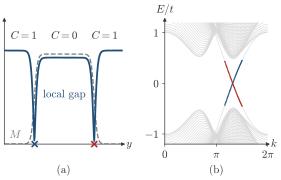

Advanced Quantum Materials 2027 · All lectures · Lecture notes
Session 3. Topological Band Structure Theory
3.7 What topology means for a Hamiltonian, and the bulk-boundary correspondence
We have now seen one topological invariant at work. Let us now step back and say what the word topological means, in the mathematical sense from which the word is taken. Topology classifies objects by whether they can be smoothly deformed into each other without a drastic operation, such as cutting, tearing or gluing. Closed surfaces in three dimensions are classified by their number of holes. A donut and a coffee cup both have one hole and can be continuously deformed into each other, while a sphere has no hole and cannot be deformed into either of them. Closed curves embedded in three dimensions have a similar classification by knots, since curves with different knots cannot be smoothly untangled into each other.
For a Hamiltonian, the equivalent of a deformation is to change the band structure continuously while the bulk gap stays open. Two Hamiltonians related by such a deformation have the same Chern number, because \(C\) in (3.4) is quantized and so it cannot change continuously. It can only jump, and a jump requires the gap to close at some point of the deformation. So the Chern number plays the role that the number of holes plays for a surface. Hamiltonians with the same Chern number are topologically equivalent, meaning that they can be deformed into each other without closing the gap, and Hamiltonians with different Chern numbers are not.
This has a direct and strong consequence. Let us build a Hamiltonian that changes in space and is equal to \(H_1\), with Chern number \(C_1\), far to the left, and to \(H_2\), with Chern number \(C_2 \neq C_1\), far to the right. The Hamiltonians \(H_1\) and \(H_2\) cannot be deformed into each other without closing the gap, and the Hamiltonian in between goes continuously from one to the other. So the gap must close somewhere in between, for any microscopic construction of the interface. An interface between two bulk phases with different Chern numbers always has a gapless state. Its existence depends only on \(C_1\) and \(C_2\), and not on any detail of the interface. This is called the bulk-boundary correspondence. The vacuum has \(C=0\), since it is topologically trivial, so a quantum Hall state with \(C=1\) always has a gapless edge state at every boundary with the vacuum. This is the edge physics of Section 3.6, now obtained from a completely general argument. Figure 3.2 shows the three steps of this argument in order.

Why must the gap close somewhere in an interface between a region with \(C=1\) and a region with \(C=0\)?
Show the answers
- A. ✗ False
This is false. Two regions that both have \(C=1\) can be joined with the gap open everywhere, and the Hall conductivity is the same on both sides. The gapless state is forced by the change of \(C\) and not by the presence of a current.
- B. ✓ True
This is true. A quantized quantity cannot change continuously while the gap is open, as in (3.4). An interface from \(C=1\) to \(C=0\) must then have a point where the local gap is zero.
- C. ✗ False
This is false. Replace the vacuum by a trivial insulator, such as boron nitride, with \(C=0\) and a large gap. The interface with a \(C=1\) region still has a gapless state, so the vacuum plays no role.

The same argument explains the robustness that we used before. Let us put a local impurity at the edge of a quantum Hall sample. This only changes the microscopic details of the interface between the vacuum and the quantum Hall state. Since the topological excitation of the interface must exist for any such details, the edge state reorganizes itself around the impurity and is not scattered by it. This is a general mechanism, which is not special to the quantum Hall case, and it will appear again for every topological invariant that we see from now on.
Try it. In the cell with the Haldane coupling on an island, change rot=np.pi/6. or n=8 so that the shape of the edge changes. At the energies inside the gap, the local density of states still sits on the whole boundary, whatever its shape. This is the argument of , which does not use any detail of the edge.
- In Section 3.9c the same argument has a one-dimensional version, where the Zak phase fixes the end states of the SSH chain.
- In Section 4.5 the boundary of a sample with \(N\) filled Landau levels has \(N\) chiral modes.
- In Section 5.17 the Kitaev chain has Majorana zero modes with open boundaries, and in Section 6.16 a topological magnon band has chiral magnon edge modes.
- In Section 9.8 a vacancy acts as a boundary of zero size and binds a state inside the gap.